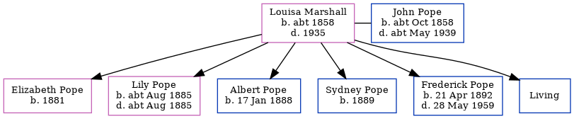

Louisa Pope (née Marshall) c1858 - 1935 [ Home ] | [ Calendar ] | [ Surnames Index ] | [ Family History ]Louisa Marshall , the wife of John Isaac Pope (the second cousin three-times-removed on the father's side of Nigel Horne ), was born in Normandy, Surrey, England c. 18581 and married John (a bricklayer with whom she had 6 children: Elizabeth A , Lily Louisa , Albert Edward , Sydney J , Frederick Ernest and Leonard Ruskin Sextus , along with 1 surviving child) in Turnham Green, London, England on Feb 16, 18792 .
Throughout her life, she lived on Binns Road, Chiswick, London on Apr 5, 18911 ; and at Eastbury Grove, Chiswick, London on Mar 31, 19013 and on Apr 2, 19114 .
She died in 1935 in Brentwood, London, England.
Children Elizabeth A was born in 1881Lily Louisa was born c. Aug 1885Albert Edward was born on Jan 17, 1888Sydney J was born in 1889Frederick Ernest was born on Apr 21, 1892Citations 1891 England, Wales & Scotland Census - Findmypast (was age 31 and the wife of the head of the household) England & Wales Marriages 1837-2005 - Findmypast 1901 England, Wales & Scotland Census - Findmypast (was age 42 and the wife of the head of the household) 1911 Census for England & Wales - Findmypast (was age 52 and the wife of the head of the household) Media 1901 England, Wales & Scotland Census - GBC/1901/0007967926 1891 England, Wales & Scotland Census - GBC/1891/0007828392 1911 Census for England & Wales - GBC/1911/RG14/06931/0519/2 Family Tree Map
Generated by ged2site . Last updated on Feb 28, 2025